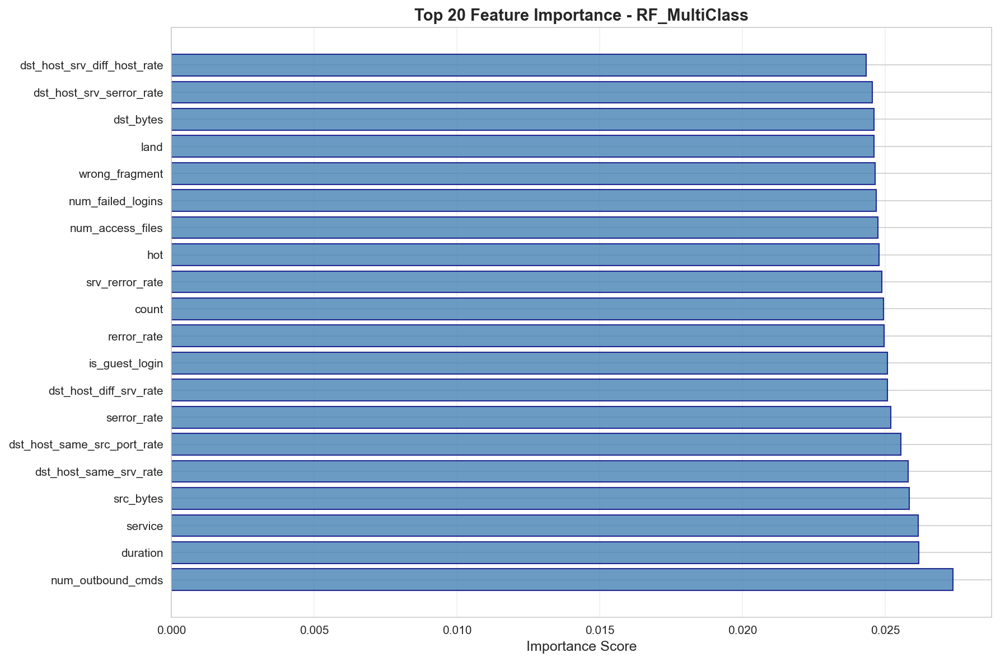

📈 RF MultiClass
Accuracy
0.1975
Precision
0.1986
Recall
0.1975
F1-Score
0.1969
Classification Report
| Class | Precision | Recall | F1-Score | Support |
|---|---|---|---|---|
| Normal | 0.1889 | 0.1921 | 0.1905 | 177 |
| DoS | 0.2303 | 0.1979 | 0.2129 | 192 |
| Probe | 0.2081 | 0.2680 | 0.2343 | 153 |
| R2L | 0.2065 | 0.1758 | 0.1899 | 182 |
| U2R | 0.1587 | 0.1648 | 0.1617 | 182 |
Confusion Matrix

Feature Importance (Top 20)
